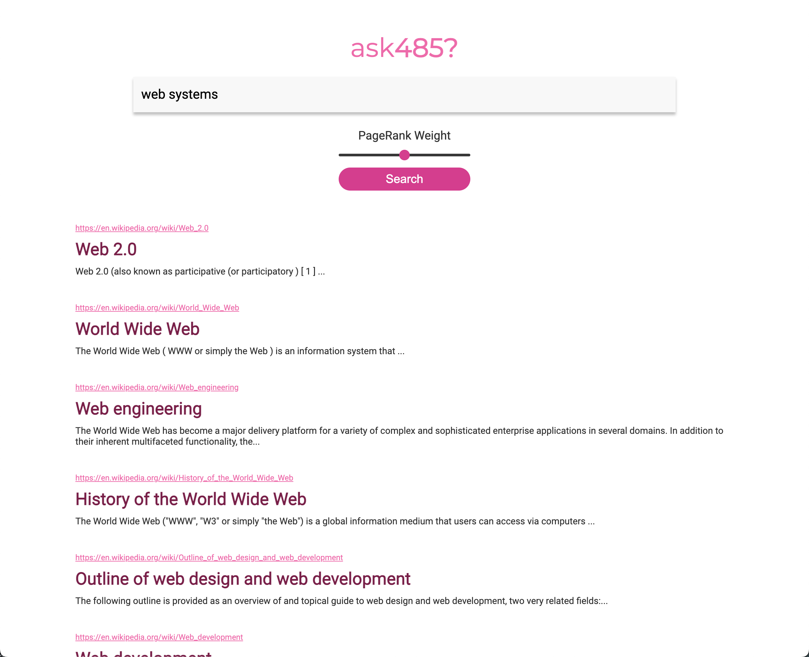
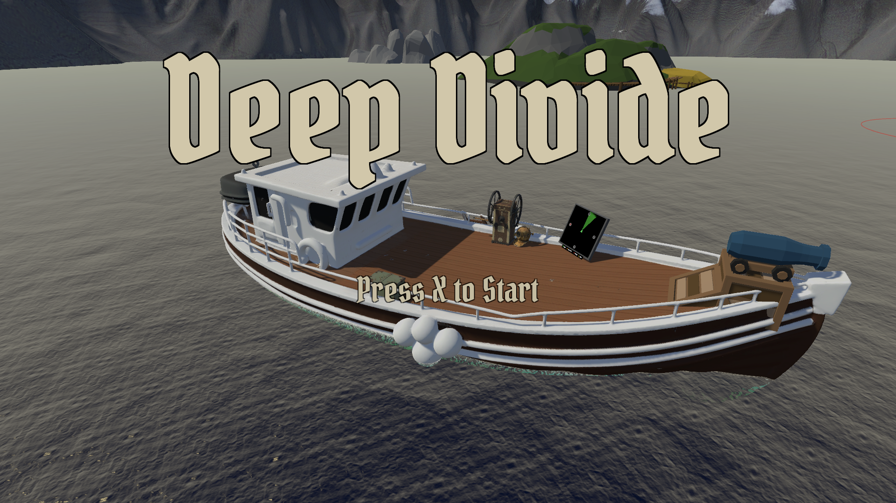
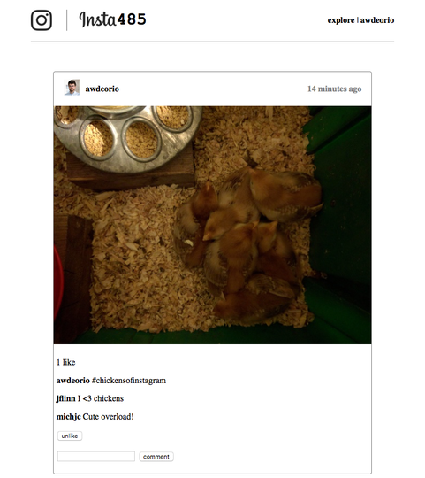

Projects
Work spanning game development and software engineering — see the resume for full details on each.
Software Engineering
Prediction Market Tracker
January 2026 — PresentA prediction market intelligence platform that identifies high-conviction traders by tracking whale-sized trades across Polymarket and Kalshi, scoring wallets by demonstrated prediction skill. A data ingestion pipeline processes 1,000+ market events per hour into PostgreSQL via Prisma ORM, powering analytics dashboards and trading charts. A scoring engine evaluates 2,000+ wallets across resolved markets using win-rate and Brier score metrics, surfacing ranked forecasters via a React leaderboard backed by an Express REST API.
File Network Server
November — December 2025A multi-client networked file system server in C++, built as a team project at the University of Michigan. The server supports remote file operations over a custom client–server protocol using a multi-threaded architecture with mutexes and RAII-style lock guards, enforcing atomic file and directory operations under concurrent access. The request/response handling layer includes full validation and error handling; the system was stress-tested to verify correctness and reliability under high contention.
Distributed Search Engine
October — November 2024A distributed search engine indexing 10,000+ Wikipedia articles, built at the University of Michigan. A MapReduce pipeline builds a segmented inverted index with tf-idf weighting and document normalization. A Flask REST index server loads index segments, PageRank data, and stopwords into memory to serve ranked results using cosine similarity and weighted PageRank scoring. A search aggregator performs concurrent API requests across multiple index servers, merges ranked results, and serves a dynamic search interface backed by SQLite metadata storage.

Screenshot from the EECS 485 project specification by Andrew DeOrio and the EECS 485 staff, licensed under CC BY-NC 4.0.
Game Development
Deep Divide
2024 — PresentA two-player local co-op underwater exploration game. One player captains the boat — navigating by radar and fending off pirate raids — while the other dives below to loot shipwrecks and reefs before their oxygen runs out. Players hit a daily quota at the merchant, buy upgrades, and push deeper across a five-day run, losing everything they carry if they die underwater. I contributed gameplay systems, UI/UX design, onboarding (tutorial, intro cinematic, contextual hints), diving feel (oxygen HUD, crosshair, underwater effects), and physics handling. Presented at a university game expo; in continued development toward a full public release.

The Legend of Zelda NES (Unity Remaster)
2024A Unity-based recreation of The Legend of Zelda (NES), developed as a team project. I designed and integrated core gameplay systems — combat, enemy AI, UI, and room transitions — while implementing modular, reusable C# architecture to support the overall gameplay structure. Contributed to testing and debugging throughout development to ensure project stability.
Observed
2024A 2D puzzle-platformer built in Unity centered around a vision-based freeze mechanic. Players use a directional flashlight to freeze enemies and platforms within their line of sight, transforming hazards into traversal tools and puzzle elements. I designed and implemented the core vision-cone detection and freeze system using a PubSub/EventBus architecture to keep systems modular and decoupled. Also developed player movement and aiming, reactive moving platforms, vision-blocking mechanics, a jump system, audio feedback integration, and camera refinements to improve game feel and clarity.
Full-Stack Social Media Platform
September — October 2024An Instagram-style social media platform with a React frontend and Flask REST API backend, built at the University of Michigan. Supports authenticated CRUD operations, pagination, and proper HTTP status handling for posts, comments, and likes. Features include infinite scroll, double-click-to-like interactions, and real-time feed updates via asynchronous Fetch API requests, backed by a normalized relational schema with optimized SQL queries for personalized feeds. Deployed to AWS EC2 with a configured Webpack build pipeline.

Screenshot from the EECS 485 project specification by Andrew DeOrio and the EECS 485 staff, licensed under CC BY-NC 4.0.